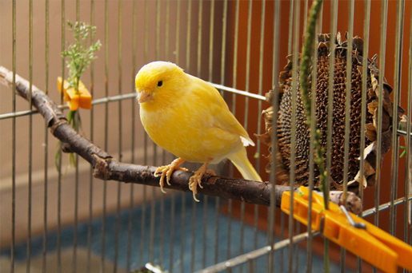

Ptaki

Ptaki domowe to gatunek ptaka, który został sztucznie hodowany i przystosowany do życia w bliskim kontakcie z ludźmi. Ptaki te są zazwyczaj odmianami dzikich gatunków, które zostały wyhodowane w celu uzyskania określonych cech wyglądu lub zachowania. Najpopularniejsze ptaki domowe to kanarki, papugi, szpak, wróble, koguty i gołębie. Większość ptaków domowych jest zdolna do komunikowania się z ludźmi poprzez mowę lub ćwierkanie. Większość hodowców traktuje je jako zwierzęta domowe i przywiązuje się do nich.
Pająki
Pająki domowe to gatunek pająka, który często jest spotykany w domach i mieszkaniach. Często są one trzymane jako zwierzęta domowe. Większość gatunków pająków domowych jest mała i nieszkodliwa, chociaż niektóre gatunki, takie jak hobo i pająk żyrafa, potrafią ugryźć. Większość pająków domowych żywi się małymi owadami, takimi jak muchy i karaluchy. Są one zazwyczaj łatwe w hodowli i zapewniają miłe doświadczenie dla miłośników zwierząt.
Gekony
Gekony domowe to małe gady z rodziny gekonowatych, pochodzące z tropikalnej Azji. Są małe, zazwyczaj osiągają długość od 5 do 15 cm, ale niektóre gatunki mogą być znacznie większe. Ich skóra jest gładka i błyszcząca, a ich oczy są wyjątkowo duże i mają niezwykły talent do podążania za ruchomymi obiektami. Mają one również wyjątkową umiejętność poruszania się do tyłu. Cechuje je również długa żywotność, średnia długość życia wynosi 12–20 lat. Gekony domowe są drapieżnikami i polują na małe owady i inne małe zwierzęta. Są popularnymi zwierzętami domowymi i są w stanie wyczuć obecność ludzi i innych zwierząt, a także pozostawać w bliskiej odległości od nich.